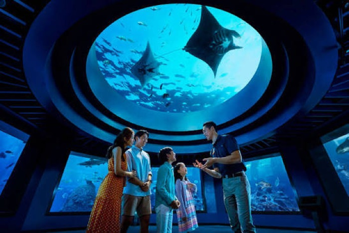
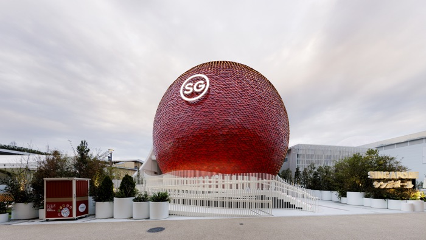
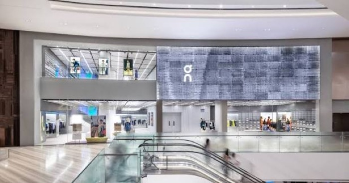
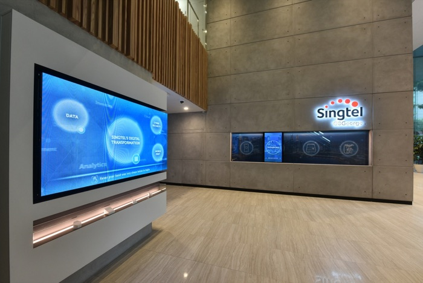
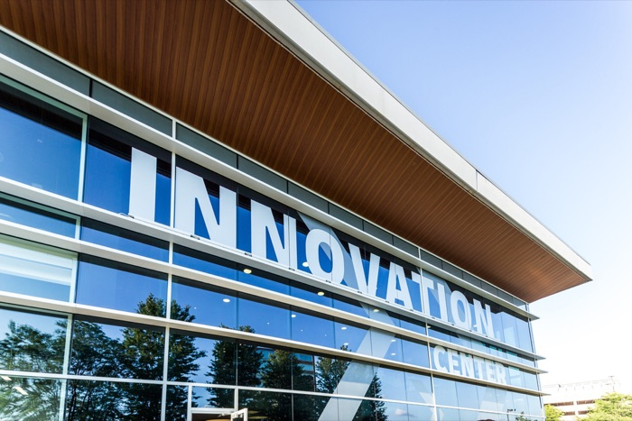
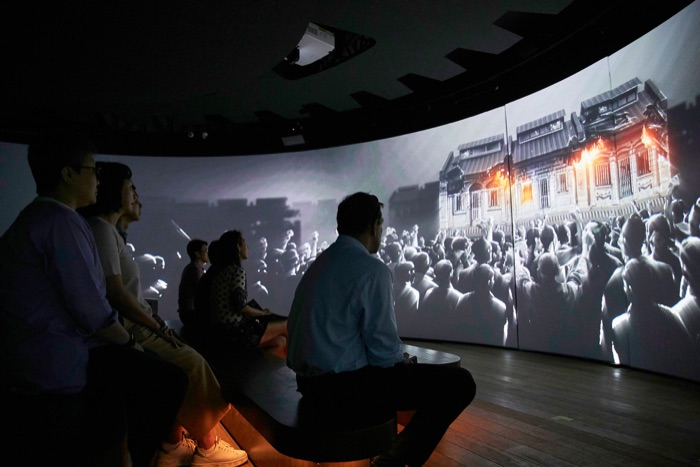
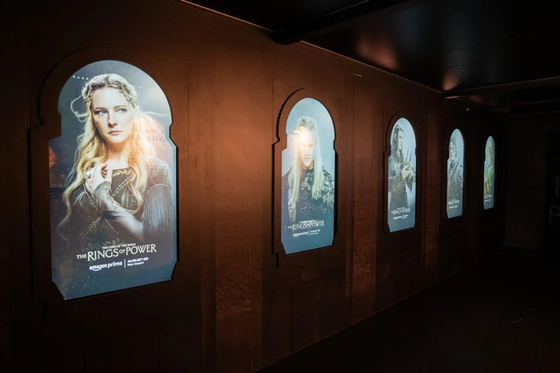
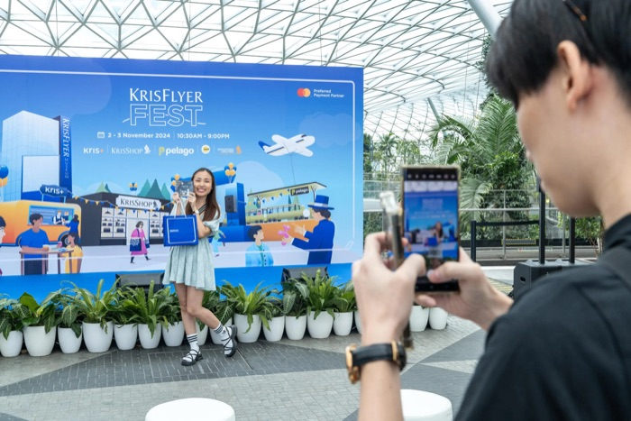

Kingsmen Creatives designs and builds the places where brands meet people — museum galleries, theme-park attractions, interactive flagship stores and live brand events. A design-and-build contractor for the experience economy: the client buys a finished, fitted-out space, and Kingsmen carries the creative work, fabrication, logistics and installation risk needed to deliver it.
Contract-based revenue across exhibitions, attractions, interiors and experiential marketing.
Net margin reached 3.7% — the strongest of the past five years.
Unpledged cash less bank and term loans; leases excluded.
South and North Asia dominate; Singapore alone is 42.3% of group revenue.
Started in Singapore by Benedict Soh and Simon Ong. Both still sit on the board and between them hold close to half the shares — this is still a founder-controlled company.
On the SGX Mainboard since September 2003 at an IPO price of 19.8¢. A small-cap: closely held, thinly traded and lightly covered by analysts.
Four operating segments: Exhibitions, Thematic & Attractions; Retail & Corporate Interiors; Research & Design; and Experiential Marketing.
A global network of offices and full-service production facilities across Asia, the Middle East, Europe and North America.
Tourism, luxury investment, destination capex and corporate confidence determine how many projects enter the market.
Creative compatibility, references and consistent regional execution influence whether Kingsmen wins the brief — and whether the client returns.
Awards become design work, fabrication, installation and milestone revenue over months or years. Annual revenue therefore lags the demand signal.
Mix, change orders, procurement, working capital and repeat work determine whether revenue becomes profit, free cash flow and shareholder value.
This division undertakes large, often one-off projects for governments, tourism operators, entertainment companies and major brands — exhibition booths, museums, theme-park environments, visitor attractions and major pavilions.


A specialised design-and-build contractor for branded commercial spaces. Kingsmen works with retail and corporate clients to translate a brand's identity into a physical environment — stores, offices, showrooms and flagship locations.


Kingsmen's higher-level creative capability, housed principally under KR+D. It researches audiences and develops the narrative, layout and visitor journey behind a space — consumer research, storytelling, spatial and experience design.


Temporary brand experiences, including product launches, pop-up installations, luxury-brand events, gala dinners, roadshows, and interactive marketing campaigns.


| FY2025 segment | External revenue | Revenue share | Segment profit | Segment margin | YoY revenue |
|---|---|---|---|---|---|
| Exhibitions, Thematic & Attractions (ETA) | S$172.4m | 46.3% | S$6.3m | 3.5% | −7.9% |
| Retail & Corporate Interiors (RCI) | S$170.2m | 45.7% | S$9.6m | 5.6% | −0.6% |
| Research & Design | S$20.0m | 5.4% | S$1.7m | 8.6% | +5.0% |
| Experiential Marketing | S$10.0m | 2.7% | −S$0.3m | −3.2% | −9.0% |
| Group / PBT | S$372.5m | 100.0% | S$16.8m | 4.5% | −4.1% |
ETA and RCI supply 92% of revenue at just 3.5% and 5.6% margins, so profit swings with project timing, tender pricing and site execution. Winning bigger jobs adds turnover, and one slipped handover can move group earnings.
At an 8.6% margin, R&D earns roughly 2.5× more profit per revenue dollar than ETA, yet it is only 5.4% of sales and grew 5.0%. Scaling design-led work — or attaching it to more build contracts — is the cheapest route to a higher group margin.
Experiential Marketing swung to a −S$0.3m loss on 2.7% of revenue, with sales down 9.0%. The drag on group PBT is small, but a sub-scale unit still absorbs management time — the question is whether to reprice it, fold it into ETA, or exit.
Kingsmen's competitive advantage is integrating creative origination with physical delivery and live operation. Integration reduces coordination risk for clients — but the current revenue mix remains concentrated in the middle of the chain, where project competition and input costs are strongest.
Audience insight, brand interpretation, visitor journey and commercial objectives.
Concept development, storytelling, spatial design, engineering and specification.
Procurement, production, fit-out, logistics, site management and delivery.
Events, ticketed experiences, maintenance, programming and audience measurement.
FY2021–FY2025: S$273.2m → S$372.5m.
Gross profit grew faster than revenue as gross margin expanded 3.1 points.
At the FY2025 cost structure, a 1% revenue change produces roughly a 5.5% PBT change.
| FY | Revenue | Gross profit | Gross margin | PBT | Net profit | Net margin | EPS | DPS |
|---|---|---|---|---|---|---|---|---|
| 2021 | 273.2 | 58.9 | 21.6% | 1.0 | 1.0 | 0.4% | 0.50¢ | — |
| 2022 | 328.4 | 70.3 | 21.4% | 5.7 | 4.6 | 1.4% | 2.30¢ | 1.00¢ |
| 2023 | 361.5 | 78.2 | 21.6% | 3.1 | 2.9 | 0.8% | 1.41¢ | 1.00¢ |
| 2024 | 388.4 | 90.4 | 23.3% | 16.0 | 13.1 | 3.4% | 6.51¢ | 2.00¢ |
| 2025 | 372.5 | 92.2 | 24.7% | 16.8 | 13.7 | 3.7% | 6.78¢ | 3.00¢ |
Current strategy: the group has moved from recovery to optimisation — future value depends less on restoring volume and more on sustaining the 24–25% gross-margin range. FY2025 revenue fell 4.1%, yet gross profit hit a five-year high of S$92.2m. A point of gross margin is worth ~S$3.7m, roughly 4× what 1% more revenue delivers at 5.5× leverage — and extra volume must be won in ETA and RCI at 3.5–5.6% margins, where tender pricing sets the price.
Headline comparisons are distorted by a S$5.3m property-disposal gain booked in FY2024. Strip it out and the underlying improvement is ≈75%.
As reported.
One-off property-disposal gain.
The true comparison base.
≈75% above the ex-gain base
Not a fully normalised earnings calculation: it removes only the disclosed disposal gain and leaves all other year-specific project effects intact.
Revenue fell S$14.8m as 2024's big completions ended and new work was scheduled later. The gain is mainly margin, 0.9% → 3.5%: low-margin completion work rolled off and the group booked higher margins on certain events and projects.
Reported RCI profit looks like it fell, S$13.2m → S$9.6m, but S$5.3m of FY2024 was a one-off property-disposal gain, so the true base was S$7.8m. Revenue was flat at −0.6%, so the S$1.8m is pure execution, with margin 4.6% → 5.6%.
Revenue fell ~S$1.0m and profit fell S$0.9m: roughly 90% of lost sales dropped straight to the bottom line. At S$10m of revenue, the creative and production base is largely fixed and too small to flex with a 9% decline.
Approximately 2.0× attributable net profit.
Contract assets fell sharply, partly offset by higher receivables and lower contract liabilities.
Higher than the early recovery years but below operating cash generation.
Kingsmen enters each year with only 34–42% of prior-year revenue secured. But the unsecured remainder — in-year conversion — landed at S$236.5m, S$236.4m and S$236.5m across FY2023–25, a spread of S$0.1m. That turns a speculative-looking book into a planning number, and lets Kingsmen hold delivery capacity through a thin January instead of cutting and rehiring, protecting the execution margin.
| At 31 January | Secured contracts | Expected in that FY | Coverage of prior-year revenue |
|---|---|---|---|
| 2023 | S$133m | S$125m | 38% |
| 2024 | S$171m | S$152m | 42% |
| 2025 | S$192m | S$136m | 35% |
| 2026 | S$151m | S$127m | 34% |
S$80.4m expected in 2026 · S$56.5m expected in 2027 · S$13.2m expected in 2028, with a further S$10.7m thereafter.
Thematic attraction design-and-build award to Kingsmen Exhibits, announced 22 April 2026 and recognised across FY2026–FY2029. Signed after the 31 January snapshot, it sits on top of the S$151m secured book — an addition worth roughly half that book again.
| Illustrative FY2026 model | Bear | Base | Bull |
|---|---|---|---|
| Opening expected recognition | 127.0 | 127.0 | 127.0 |
| Other conversion / short-cycle work | 213.0 | 225.0 | 236.5 |
| RWS recognition assumed | 12.0 | 12.0 | 17.5 |
| Modelled revenue | S$352.0m | S$364.0m | S$381.0m |
| Growth vs FY2025 | −5.5% | −2.3% | +2.3% |
1 · Start with the S$127m already expected for FY2026. 2 · Estimate post-January and short-cycle conversion below or near the historical S$236.5m residual. 3 · Add RWS cautiously — some recognition may substitute for ordinary conversion capacity.
Kingsmen participates in a competitive market: group revenue is a small fraction of the ~US$16.5bn global exhibition-services pool. The market is fragmented; no participant is a price setter.
SGX: 5MZ; market data is date-sensitive.
Approximately 201.9m issued shares.
Market cap ÷ FY2025 attributable profit.
Market cap ÷ attributable equity.
3.0¢ FY2025 dividend ÷ S$0.54.
After subtracting analytical net cash.
The enterprise-value lens on a cash-heavy balance sheet.
Of the ~US$16.5bn exhibition-services pool.
Revenue and earnings are project-dependent · net margin is still thin at 3.7% · recurring-revenue and repeat-client metrics are not disclosed · small-cap liquidity is limited · cash may be required as an operating buffer.
| FY2025 | Kingsmen | Pico Far East |
|---|---|---|
| Revenue | S$372.5m | HK$7.21bn ≈ S$1.2bn (≈3.2×) |
| Gross margin | 24.7% | 30.9% |
| Net margin | 3.7% | 6.0% |
| P/E | ≈8.0× | ≈8.7× |
Kingsmen's P/E sits just under Pico's — but Pico earns a 6.0% net margin against Kingsmen's 3.7%, so the gap reflects profitability, not a hidden discount. Pico also positions around CRM, audience data, digital engagement, AI and measurable outcomes — capabilities that attach higher-value revenue to physical delivery. Strategic implication: as Kingsmen loses on scale, its strategy should shift toward differentiation rooted in novel art forms and an artistic style that acts as "market power" unique to this industry — and toward a comparable story on measurement, repeat relationships and technology-enabled value.
Kingsmen is filed as a B2B contractor. That label explains less than half of how its revenue actually behaves — and no single macro variable governs all three logics. That is the case for a multi-driver, multi-lag model rather than one GDP beta.
No consumer buys from Kingsmen. Revenue depends on other firms' capex and marketing budgets — approved annually, tendered, then built. Demand arrives as a decision, not a purchase: it can be forecast but never sold directly.
RCI is 45.7% of revenue and serves brands whose own demand is status-driven: Dior, Fendi, Tiffany, Van Cleef, Ralph Lauren. Their spend follows brand-positioning cycles and network strategy, not weekly retail volumes.
Museums, national pavilions, oceanariums and bicentennial exhibitions are commissioned by states and institutions. Demand follows policy, prestige and anniversary calendars — often counter-cyclical to private capex.
Kingsmen's revenue is a second-order effect of consumer and visitor demand — and second-order effects move further than first-order ones.
Consumer wealth, tourist arrivals and brand confidence. Singapore arrivals reached 16.9m in 2025 (+2.3%), with S$2.3bn of MICE receipts.
A brand or institution decides to build, refurbish or stage something. This runs on an annual budget cycle; approval is discrete, not continuous.
Competitive bid, then contract. This is where Kingsmen's revenue is actually created — and the only point at which price is set.
Revenue booked over 12–36 months on percentage of completion. Only here does the original macro signal finally reach the P&L.
Capex is a change in the stock of stores and attractions, not a flow of sales. A brand with a stable network can cut new-build spending to almost nothing without closing a single shop — so a modest move in end demand produces a far larger move in Kingsmen's order book. The accelerator effect.
Singapore arrivals rose 2.3% and MICE receipts hit S$2.3bn, yet ETA revenue fell 7.9% and group revenue fell 4.1%. The end market grew while recognised revenue shrank, because 2024's awards had already been built out. Revenue tracks past decisions, not present conditions.
A Veblen good is one whose appeal rises with its price, because price is the signal of desirability. A flagship boutique, a national pavilion or a themed attraction works the same way: part of its value to the client is that it is visibly expensive to have built.
The brief for a flagship store acts as a competitive position, and underspending defeats the purpose. That sustains willingness to pay for design — and is why R&D earns 8.6% while build earns 3.5–5.6%.
Positional spending is discretionary and confidence-linked. When brand or state confidence falls, the flagship is postponed well before the supply chain is cut. Prestige demand is not defensive demand — it is among the first to be deferred.
The premium accrues to the brand that owns the luxury signal. Kingsmen sits closest to that premium in Research & Design — 5.4% of revenue at an 8.6% margin — and furthest from it in fabrication and fit-out, 92% of revenue at 3.5–5.6%. The economics of moving upstream are not a preference; they are where the Veblen rent actually is.
Though Kingsmen is B2B, its demand is ultimately derived from consumer wealth, tourism, brand investment and institutional capex.
| Economic variable | Primary transmission channel | Most exposed divisions | Likely lag | Kingsmen consequence |
|---|---|---|---|---|
| GDP / business confidence | Corporate capex and marketing budgets | All; especially RCI, Experiential | 0–2 yrs | More awards in expansions; postponements in downturns |
| Tourism | Event demand, venue investment, attraction attendance | ETA; Experiential | 0–2 yrs | More pavilions, events, museums and destination projects |
| Luxury sales / wealth | Store openings, refurbishments, brand activation | RCI; Experiential | 1–2 yrs | Premium projects expand, but aspirational demand is cyclical |
| Interest rates | Developer and attraction investment hurdle rates | ETA; RCI | 1–3 yrs | Higher rates delay capex; net cash reduces financing risk |
| Input inflation | Labour, materials, freight, subcontractor costs | ETA; RCI | Immediate | Fixed-price contracts face margin compression |
| Foreign exchange | Translated revenue and cross-border procurement | All regional work | Immediate | FY2025 recorded a net S$1.5m FX loss |
| Taste / cultural trends | Brand relevance and preferred-supplier selection | R&D; RCI; Experiential | Persistent | Differentiation can reduce price sensitivity and switching |
Δ ln(Revenuer,t) = αr + β₁ Δ ln(Tourismr,t−1) + β₂ Δ ln(Retail/Luxuryr,t−1) + β₃ Δ ln(GDPr,t−1) + β₄ Pipelinet−1 + εr,t
Recover 10–20 years of annual country or regional revenue, or use half-year data. A longer panel matters more than adding variables.
Demand converts slowly, so the effect may not land in year 0. Testing lags 0, 1 and 2 locates the real driver, yields a cumulative elasticity and leaves a lead indicator for forecasting.
Use prior order book, contract assets, announcements or rolling three-year revenue to reduce distortion from individual project timing.
2025 visitor arrivals reached 16.9m (+2.3%). STB reported S$2.3bn of MICE receipts and highlighted major attractions, luxury activations and venue investment. Supports ETA and Experiential demand — but project awards remain cyclical.
Global personal luxury goods stabilised in 2025 while consumers kept prioritising travel, hospitality and experiences. In China, luxury goods declined 3–5%, reinforcing the need to sell retail spaces as destinations rather than conventional fit-outs.
Global art sales rose 4% to US$59.6bn in 2025, with value heavily influenced by reputation, networks and scarce expertise. Kingsmen is not an art-market company, but similar preference economics operate in high-stakes creative procurement.
Experience strategy · visitor analytics · interactive content · IP partnerships · operation and optimisation · sustainability measurement
Switch supplier only if: price saving > onboarding cost + redesign cost + delay risk + brand-inconsistency risk.
A competing bid 4% lower saves S$200,000. Expected delay loss: 15% × 30 days × S$25k = S$112,500. Redesign = S$70,000. Internal onboarding = S$50,000.
Exceeds the S$200,000 price saving. Remaining with the incumbent is economically rational — even before reputational damage or executive attention.
Each project teaches Kingsmen the client's materials, approval rules, brand codes, regional adaptations and decision-makers — making the next project faster and less risky.
| Force | Intensity | Evidence in Kingsmen's numbers |
|---|---|---|
| Competitive rivalry | HIGH | A fragmented, tender-based market. Kingsmen is roughly 1.5–2% of the global exhibition-services pool and about a third the size of Pico Far East. Price is reset bid by bid. |
| Buyer power | HIGH | Buyers are large and sophisticated — luxury groups, Genting, STB, government agencies — and procure by competitive tender on fixed-price terms that leave overruns with Kingsmen. |
| Supplier power | MODERATE | Labour, materials, freight and subcontractors. Input inflation hits immediately, and FY2025 carried a net S$1.5m FX loss on cross-border procurement. |
| Threat of new entrants | LOW–MODERATE | Basic fit-out has low capital barriers. Marquee work does not: an S$80.8m RWS award requires track record, bonding capacity and a delivery network across 20-plus cities. |
| Threat of substitutes | RISING | Virtual and hybrid experiences, and brands taking design in-house. Partly offset by the shift back to physical experience: luxury goods stabilised in 2025 while experiences outperformed. |
Differentiation, reputation and switching costs all bite here. Buyer power is weaker because the alternative is not another bidder — it is a worse idea. But this is only 5.4% of revenue.
Where rivalry and buyer power are both high, on 92% of revenue. Fixed-price tenders, many capable bidders, clients who can and do compare. Price is taken here, not made.
Events, maintenance, programming, audience measurement. Recurring by nature and stickier — but not reported separately, so the economics remain unproven.
Kingsmen is a price-taker where 92% of its revenue sits and a price-influencer where 5.4% does. Every strategic option on the table — scaling R&D, attaching design to build contracts, monetising operations — is an attempt to move revenue out of the middle of its own value chain. The margin data reached the same conclusion independently.
The top row decides whether demand exists at all. The bottom row decides what it costs to serve — and who gets to bill for it.
Much marquee work is state-commissioned or state-enabled: the Singapore Pavilion at Expo 2025 Osaka, the Singapore Oceanarium. Tourism policies are direct demand instruments. Operating across 20-plus cities also carries geopolitical and market-access exposure.
GDP and business confidence set capex and marketing budgets with a 0–2 year lag. Interest rates move developer and attraction hurdle rates at 1–3 years. Input inflation hits immediately, and FY2025 booked a net S$1.5m FX loss as the SGD appreciated.
The experience economy is the single most favourable trend. In 2025, consumers prioritised travel, hospitality and experiences — pushing brands to sell retail space as a destination rather than just a shelf. Demand for precisely what Kingsmen does.
Projection, interactive and AR content, digital twins and visitor analytics raise the value of the design layer. The same technologies are also the substitution threat: the virtual experience. Kingsmen names interactive content and visitor analytics as future value pools.
Fixed-price contracting decides who absorbs an overrun — currently, Kingsmen. Licensed-IP attractions such as The Rings of Power and NERF carry royalty obligations, and government work adds procurement and bonding requirements.
Sustainability measurement is on Kingsmen's own list of future value pools. Client ESG reporting is creating demand for modular, reusable exhibition systems and embodied-carbon accounting — the rare area where regulation creates a billable service.
| Capability | Kingsmen | Pico | Uniplan | NEON | GPJ / Jack Morton | Sunray |
|---|
Asian execution depth + end-to-end accountability. This vertical integration has yet to be assumed by its competitors.
Strategy, data and measurable commercial outcomes — precisely where Pico, NEON and GPJ position hardest.
| Risk | Probability | Impact | How it damages economics | Leading indicators | Primary mitigants |
|---|---|---|---|---|---|
| Project delay / overrun | HIGH | HIGH | Rework, liquidated damages, idle labour, deferred billing | Contract-asset ageing; change orders; utilisation | Stage gates; contingencies; scope control; claims recovery |
| Client capex slowdown | MED–HIGH | HIGH | Fewer awards, smaller briefs, price competition | Win rate; order intake; client guidance | Diversified sectors; short-cycle work; recurring operations |
| Input inflation / FX | MEDIUM | MED–HIGH | Fixed-price margin compression | Material indices; subcontractor quotes; FX losses | Escalation clauses; hedging; local sourcing; faster procurement |
| China luxury weakness | MEDIUM | MEDIUM | Store delays and lower activation spending | Luxury sales; closures/openings; brand capex | Attractions, MICE and non-luxury client mix |
| Cyber / IP breach | LOW–MED | HIGH | Operational disruption and loss of client trust | Security incidents; audit findings | MFA; SIEM; segmentation; incident exercises |
| Licensed-IP execution | MEDIUM | MED–HIGH | Minimum guarantees, schedule risk, weak ticket demand | Presales; attendance; partner performance | Stage investment; revenue-share structures; portfolio limits |
At the FY2025 gross margin of 24.75% with fixed below-gross-profit costs:
−5% revenue → PBT ≈S$12.2m
Base → S$16.8m
+5% revenue → PBT ≈S$21.4m
A 1% revenue change produces roughly a 5.5% PBT change.
With no pass-through, the shock equals about 50% of FY2025 PBT.
50% pass-through → ≈25% PBT impact
70% pass-through → ≈15% PBT impact
100% pass-through → no direct impact
Contract escalation clauses and procurement timing matter.
1% price retention across group revenue = S$3.73m, up to 22% of PBT.
+2 points of gross margin = S$7.45m gross profit, up to 44% of PBT.
These are upper bounds: win rates, scope and cost-to-serve may change.
Down 3.1% YoY, but intensity rose 1.1% to 1.59 tCO₂e per S$m.
Down 4.9%; only 1.4 tonnes recycled — a low reported recycling share.
Supported by ISO 14001 and ISO 20121 management systems.
No significant operational or financial impact reported; controls subsequently strengthened.
Certifications can be a prerequisite or differentiator for public, MICE and multinational work.
Carbon-assessment and sustainable-event capabilities can become billable services rather than overhead.
Scope 1 and 2 cover Singapore operations; Scope 3 and full project-material impacts are not yet quantified.
MFA, SIEM, segmentation and training reduce risk where client plans, IP and operational systems are sensitive.
Prioritise bid/no-bid discipline, change-order recovery, procurement timing and segment-level post-mortems.
Illustrative value: +2 points of gross margin = S$7.45m gross profit — up to 44% of FY2025 PBT.
Attach visitor analytics, CRM, carbon and post-event reporting to major projects.
Illustrative value: a 2% fee on 25% of revenue = S$1.86m revenue; at 50% gross margin ≈ S$0.93m gross profit.
R&D has the highest disclosed segment margin. Use strategy and design as a wedge into execution and ongoing optimisation.
Illustrative value: R&D share from 5.4% to 8% at flat revenue adds ≈S$9.8m design revenue.
Track repeat-client revenue, existing-client win rate, cross-division penetration, margin by tenure and renewal.
Economic objective: turn tacit aesthetic trust into observable pricing power and lower acquisition cost.